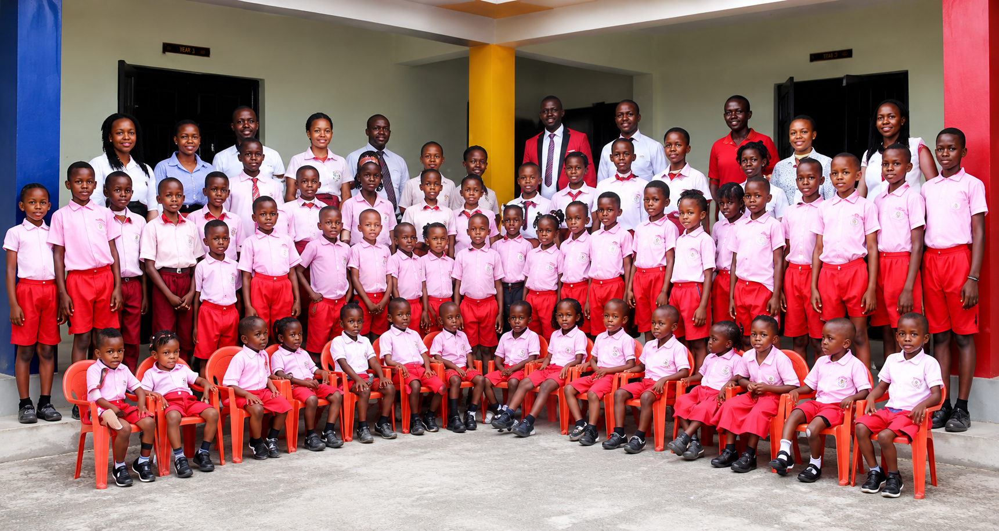

Growing Through Education and Faith
Right Steps Christian Schools provides a supportive learning environment where children and young people can grow academically, spiritually, socially and personally.
The school combines quality education with Christian values, helping students develop knowledge, character, responsibility and confidence for the future.
Learning Beyond the Classroom
Students are encouraged to participate in activities that develop their talents, confidence and teamwork.
Christian Education
Students are encouraged to grow in their knowledge of God's Word while developing positive values and character.
Academic Development
Students receive learning experiences designed to build knowledge, creativity, critical thinking and useful skills.
Student Activities
School activities give students opportunities to discover their talents, work with others and develop confidence.
A Supportive Home Away From Home
Discover our boarding programme, designed to provide students with a structured environment for learning, growth, discipline and Christian values.
Learn More →August Summer Lesson
Join our annual August Summer Lesson and discover learning opportunities in Computer, Phonics and C.R.S.
RSCS Interhouse Sports
Building teamwork, discipline and healthy competition through sports.
Interhouse Sports
The RSCS Interhouse Sports programme gives students an opportunity to participate in sporting activities, develop teamwork and discipline, display their talents and enjoy healthy competition with fellow students.
Life at Right Steps Christian Schools
Moments from learning, sports, activities and school life.